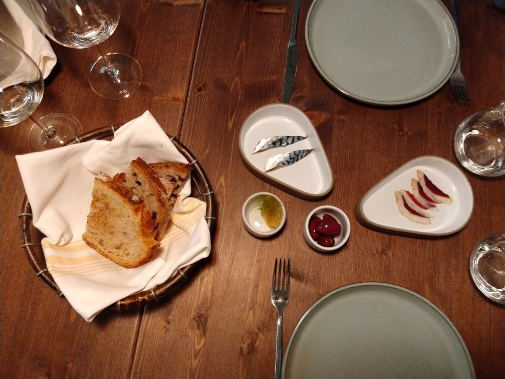
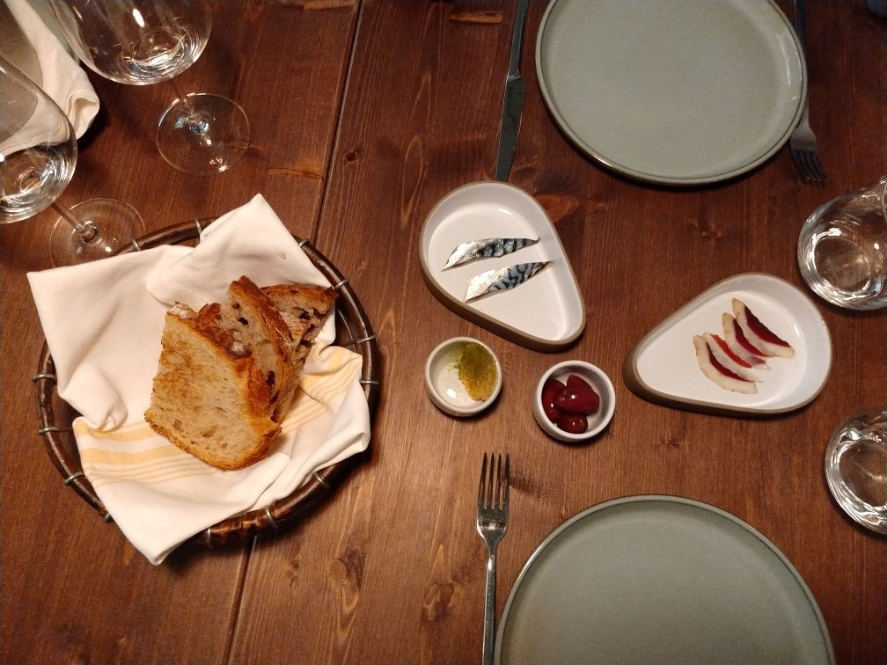

- Fisica o motriu
- Visual
- Auditiva
- Intel·lectual
- Psíquica
- Multisensorial


 

Galileo
Zona: Centre, Eixample Esquerre.
Preu: (Preu mitjà 35 €).
Telèfon de reserves: 930180651
Dinar: Mediterrània
Horari: Avui Dijous, Menjar: 13: 00h -16: 30h. veure més horaris
Comentari: El restaurant Galileu va ser creat al centre de l'Eixample per tres grans professionals de sector de la restauració per tal d'oferir una gastronomia revolucionària i creativa, fusionant els seus còctels amb els seus plats italians.
Plats: Pesto de tomàquet, focaccia amb crema de parmesà, Pizzeta fregides amb stracciatella, tàrtar de fassona, pop amb escuma de patata, tagliolini amb bou, ploma ibèrica de gla
Ambient: Exclusiu.
Característiques: Disc i ball, Música i copes, Més reservats, Brunch, afterwork, Plats per celíacs, Apte per a mascotes, Amants del vi, Esmorzars de forquilla, Accés mobilitat reduïda, Incorporació, Tiquet restaurant.
UBICACIÓ
Metro: Provença (FGC))

Ester Parra 17:51, Hoy
Un servei exquisit i un entorn acollidor i còmode. Tàrtars variats molt ben elaborats i amb una matèria prima excelent.
Richard Ruiz 20:25, 05/09/2020
Molt bon menjar i servei. Totalment recomenable. Sublims les profiteroles de cranc reial.